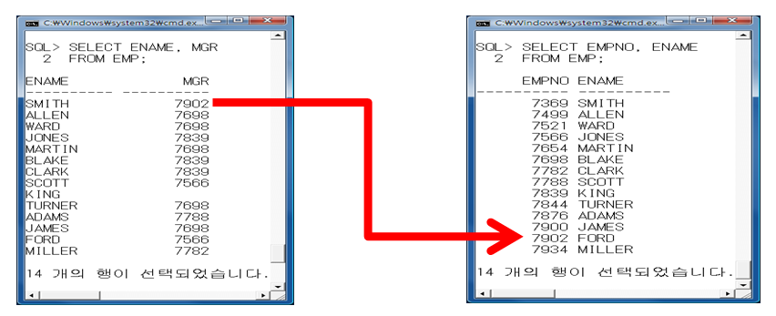

Join Keyword
Table을 결합 할때 쓰는 문장 - Join문
join : 2개 이상의 테이블을 연결하여 데이터를 검색하는 방법
1. Join의 필요성
특정부서번호에 대한 부서이름은 무엇인지 dept 테이블에 있고 특정 사원에 대한 부서명을 알아내기 위해서는
부서 테이블에서 정보를 얻어와야 합니다. Join을 하지 않는 경우
다음의 두 SQL문을 통해 알아내야 하는 번거로움이 있다.
SELECT ename, deptno FROM emp ORDER BY deptno;
SELECT deptno, dname FROM dept;
다행히도 SQL에서는 두 개 이상의 테이블을 결합햐야만 원하는 결과를 얻을 수 있을 때 한번의 질의로 원하는 결과를 얻어내는 Join 기능을 제공.
2. Cross Join
Cross Join은 특별한 키워드 없이 다음과 같이 FROM절에 두 개 이상의 테이블을 기술하는 것.
SELECT * FROM EMP, DEPT;
Cross Join의 결과 얻어지는 컬럼의 수는 사원 테이블의 컬럼의 수(8)와 부서 테이블의 컬럼의 수(3)를 더한 것이므로 11이 됩니다.
로우 수는 사원 한 명에 대해서 DEPT 테이블의 4개의 로우와 결합되기에 56개(14*4).
Cross Join의 결과를 보면 사원 테이블에 부서에 대한 상세정보가 결합되긴 했지만,
조인 될 때 아무런 조건을 제시하지 않았기에 사원 한명에 대해서 DEPT 테이블의 4개의 로우와 결합된 형태이기에
Cross Join의 결과는 아무런 의미를 갖지 못 한다.
SELECT * FROM EMP, DEPT WHERE ENAME='SCOTT';
조인 결과가 의미를 갖으려면 조인할 때 조건을 지정. 조인 조건에 따라 조인의 종류가 결정.
Equi Join : 동일한 컬럼을 기준으로 조인
Non-Equi Join : 동일한 컬럼없이 다른 조건을 사용하여 조인
Outer Join : 조인 조건에 만족하지 않는 행도 나타나는 조인
Self Join : 한 테이블 내에서 조인.
3. Equi Join
EQUI JOIN은 가장 많이 사용하는 조인 방법으로서 조인 대상이 되는 두 테이블에서 공통적으로 존재하는 컬럼의 값이
일치되는 행을 연결하여 결과를 생성하는 조인 방법.
다음은 사원 정보를 출력할 때 각 사원들이 소속된 부서의 상세 정보를 출력하기 위해서 두 개의 테이블을 조인한 예
SELECT * FROM emp, dept WHERE emp.deptno=dept.deptno;
사원(EMP) 테이블과 부서(DEPT) 테이블의 공통 컬럼인 DEPTNO의 값이 일치(=)되는 조건을 WHERE 절에 기술하여 사용.
테이블을 조인하려면 일치되는 공통 컬럼을 사용해야 하고 컬럼의 이름이 같게 되면 혼동이 오기 때문에
컬럼 이름 앞에 테이블 이름을 기술.
이름이 SCOTT인 사람의 부서명을 출력해 봅시다.
SELECT ename, dname FROM emp, dept
WHERE emp.deptno=dept.deptno AND ename=’SCOTT’;
사원이름, 부서이름, 부서번호를 출력하기 위해 다음의 SQL문을 수행하는 경우,
두 테이블에 동일한 이름의 컬럼을 사용하면 어느 테이블소속인지 불분명하기에 애매모호한 상태라는 오류 메시지가 출력됩니다.
SELECT ename, dname, deptno FROM emp, dept
WHERE emp.deptno = dept.deptno AND ename=’SCOTT’; -error
SELECT ename, dname, emp.deptno FROM emp, dept
WHERE emp.deptno = dept.deptno AND ename=’SCOTT’;
이러한 문제를 해결하기 위해, 동일한 이름의 컬럼은 반드시 컬럼명앞에 테이블명을 명시적으로 기술함으로서
컬럼이 어느 테이블 소속인지 구분할 수 있게 합니다
SELECT emp.ename, dept.dname, emp.deptno FROM emp, dept
WHERE emp.deptno=dept.deptno AND ename=’SCOTT’;
테이블 이름에 별칭을 붙이는 방법은 FROM 절 다음에 테이블 이름을 명시하고 공백을 둔 다음에 별칭을 지정하면 됩니다.
테이블 별명은 30자이하의 의미있는 단어 사용을 추천한다
SELECT e.ename, d.dname, e.deptno FROM emp e, dept d
WHERE e.deptno=d.deptno AND ename=’SCOTT’;
SELECT EMPNO, ENAME, JOB, MGR, HIREDATE, SAL, COMM, E.DEPTNO, DNAME, LOC FROM EMP E, DEPT D WHERE E.DEPTNO=D.DEPTNO;
SELECT E.*, DNAME, LOC FROM EMP E, DEPT D WHERE E.DEPTNO=D.DEPTNO;
SELECT ENAME, LOC FROM EMP E, DEPT D WHERE E.DEPTNO=D.DEPTNO;
사번, 이름, 급여, 부서코드, 부서명
select empno 사번, ename 이름, sal 급여, e.deptno 부서코드, dname 부서명 from emp e, dept d where e.deptno = d.deptno;
이름, 업무, 급여, 부서명, 근무지. 급여가 2000이상
select e.ename 이름, e.job 업무, to_char(e.sal, 'l9,999') 급여, d.dname 부서명, d.loc 근무지 from emp e, dept d where e.sal>=2000 and e.deptno=d.deptno;
이름, 업무, 부서명, 근무지. 근무지가 CHICAGO인 사람
select e.ename 이름, job 업무, dname 부서명, loc 근무지 from emp e, dept d where e.deptno=d.deptno and d.loc='CHICAGO';
이름, 업무, 근무지. deptno이 10 또는 20인 경우, 급여순
select e.ename 이름, job 업무, loc 근무지 from emp e, dept d where e.deptno=d.deptno and e.deptno in (10,20) order by sal;
이름, 급여, comm, 연봉(별칭), 부서명, 근무지. 연봉=(급여+comm)*12 단 comm이 Null이면 0
select ename 이름, sal 급여, comm 보너스, to_char((sal+NVL(comm,0))*12, 'l999,999') 연봉, d.dname 부서명, loc 근무지 from emp e, dept d e.deptno=d.deptno;
5에서 job이 salesman 또는 manager 대상이고 연봉이 큰순 정렬
select ename 이름, sal 급여, comm 보너스, to_char((sal+NVL(comm,0))*12, 'l99,999') 연봉, d.dname 부서명, loc 근무지 from emp e, dept d
where e.deptno=d.deptno and job in (upper('salesman'), upper('manager')) order by 연봉 desc;
이름, 급여, 입사일, 부서코드, 부서명 comm이 null이고 급여가 1200이상인 경우. 부서명순 정렬. 부셔명이 같으면 급여큰순
select ename 이름, sal 급여, to_char(hiredate, 'yyyy"년 "MM"월" dd"일" dy"요일"') 입사일, d.deptno 부서코드, dname 부서명 from emp e, dept d
where e.deptno=d.deptno and comm is Null and sal>=1200 order by dname asc, sal desc;
뉴욕에서 근무하는 사원의 이름과 급여를 출력하시오
SELECT ename, sal FROM emp e, dept d
WHERE e.deptno=d.deptno AND loc='NEW YORK';
ACCOUNTING 부서 소속 사원의 이름과 입사일을 출력하시오
SELECT ename, hiredate FROM emp e, dept d
WHERE e.deptno=d.deptno AND dname='ACCOUNTING';
직급이 MANAGER인 사원의 이름, 부서명을 출력하시오
SELECT ename, dname FROM emp e, dept d
WHERE e.deptno=d.deptno AND job='MANAGER';
Comm이 null이 아닌 사원의 이름, 급여, 부서코드, 근무지를 출력하시오.
SELECT ename, sal, d.deptno, loc FROM emp e, dept d
WHERE e.deptno=d.deptno AND COMM IS NOT NULL;
4. Non-Equi Join
Non-Equi Join은 조인 조건에 특정 범위 내에 있는지를 조사하기 위해서 WHERE 절에 조인 조건을
= 연산자 이외의 비교 연산자를 사용합니다. Non-Equi Join을 학습하기 전에 급여 등급 테이블(SALGRADE )을 살펴봅시다.
SELECT * FROM salgrade;
급여 등급을 5개로 나누어 놓은 salgrade에서 정보를 얻어 와서 각 사원의 급여 등급을 지정해보도록 합시다.
이를 위해서 사원(emp) 테이블과 급여 등급(salgrade) 테이블을 조인하도록 합시다.
다음은 사원의 급여가 몇 등급인지 살펴보는 예제.
SELECT ename, sal, grage FROM emp, salgrage WHERE sal BETWEEN losal AND sal between losal and hisal AND hisal;
SELECT EMPNO, ENAME, JOB, MGR, HIREDATE, SAL, GRADE||'등급', NVL(COMM,0), DEPTNO FROM EMP E, SALGRADE S WHERE SAL BETWEEN LOSAL AND HISAL;
SELECT E.*, GRADE FROM EMP E, SALGRADE S WHERE SAL BETWEEN LOSAL AND HISAL;
Comm이 null이 아닌 사원의 이름, 급여, 등급, 부서이름, 근무지를 출력하시오.
SELECT ENAME, SAL, GRADE, E.DEPTNO, LOC FROM EMP E, SALGRADE, DEPT D
WHERE E.DEPTNO=D.DEPTNO AND SAL BETWEEN LOSAL
AND HISAL AND COMM IS NOT NULL;
Example - 종합예제
- 이름, 급여, 입사일, 급여등급
select ename 이름, sal 급여, hiredate 입사일, grade 급여등급
from emp, salgrade
where sal between losal and hisal;
- 이름, 급여, 입사일, 급여등급, 부서명, 근무지
select ename 이름, sal 급여, hiredate 입사일, grade 급여등급, dname 부서명, loc 근무지
from emp e, dept d, salgrade
where sal between losal and hisal and e.deptno=d.deptno;
- 이름, 급여, 등급, 부서코드, 근무지. 단 comm 이 null아닌 경우
select ename 이름, sal 급여, grade 급여등급, d.deptno 부서코드, loc 근무지
from emp e, dept d, salgrade
where e.deptno=d.deptno and sal between losal and hisal and comm is not null;
- 이름, 급여, 급여등급, 연봉, 부서명, 부서별 출력, 부서가 같으면 연봉순. 연봉=(sal+comm)*12 comm이 null이면 0
select ename, sal, grade, (sal+NVL(comm,0))*12 연봉, dname
from emp, dept, salgrade
where sal between losal and hisal and emp.deptno=dept.deptno
order by dname, 연봉;
- 이름, 업무, 급여, 등급, 부서코드, 부서명 출력. 급여가 1000~3000사이. 정렬조건 : 부서별, 부서같으면 업무별, 업무같으면 급여 큰순
select ename, job, sal, grade, d.deptno, dname
from emp e, dept d, salgrade
where sal between losal and hisal and e.deptno = d.deptno and sal between 1000 and 3000
order by dname asc, job asc, sal desc; -- asc 당근 생략 가능
select ename, job, sal, grade, d.deptno, dname
from emp e, dept d, salgrade
where (sal between losal and hisal )and (e.deptno=d.deptno) and (sal between 1000 and 3000)
order by dname asc, job asc, sal desc; -- 괄호로 명확하게 readability를 올림
-이름, 급여, 등급, 입사일, 근무지. 81년에 입사한 사람. 등급 큰순
select e.ename, e.sal, s.grade, to_char(hiredate, 'yyyy"년 "MM"월" dd"일" dy"요일"') 입사일, d.loc
from emp e, dept d, salgrade s
where e.deptno = d.deptno and e.sal between s.losal and s.hisal and to_char(e.hiredate, 'YY') = '81'
order by s.grade desc;
select e.ename, e.sal, s.grade, to_char(hiredate, 'yyyy"년 "MM"월" dd"일" dy"요일"') 입사일, d.loc
from emp e, dept d, salgrade s
where e.deptno = d.deptno and e.sal between s.losal and s.hisal and extract(year from hiredate) = 1981
order by s.grade desc;
5. Self Join
조인은 두 개 이상의 서로 다른 테이블을 서로 연결하는 것뿐만 아니라,
하나의 테이블 내에서 조인을 해야만 원하는 자료를 얻는 경우가 생깁니다.
Self Join이란 말 그대로 자기 자신과 조인을 맺는 것. Self Join을 보다 구체적인 예를 통해서 알아보도록 합시다.
SMITH의 매니저 이름이 무엇인지 알아내려면 어떻게 구해야 할까요?

이런 경우 Self Join을 씁니다.
Slef Join은 Edui Join과 같으나 하나의 테이블에 조인이 일어나는 것이 다름.
같은 테이블에 대해 두 개의 Alias를 작성 함으로서 from 절에 두 개의 테이블을 사용하는 것과 같이 함

WORKER.MGR 과 MANAGER.EMPNO은 같다
SELECT WORKER.ENAME || ‘의 상사는 ‘ || MANAGER.ENAME
FROM EMP WORKER, EMP MANAGER
WHERE WORKER.MGR = MANAGER.EMPNO
Inner join Total Example - 종합예제
매니저가 KING인 사원들의 이름과 직급을 출력하시오.
SELECT WORKER.ENAME, WORKER.JOB
FROM EMP WORKER, EMP MANAGER
WHERE WORKER.MGR=MANAGER.EMPNO AND MANAGER.ENAME='KING';
SCOTT과 동일한 근무지에서 근무하는 사원의 이름을 출력하시오
SELECT DEPTNO FROM EMP WHERE ENAME='SCOTT';
SELECT ENAME FROM EMP WHERE DEPTNO=20 AND ENAME<>'SCOTT';
SELECT E1.ENAME, E1.DEPTNO, E2.DEPTNO, E2.ENAME
FROM EMP E1, EMP E2
WHERE E1.ENAME='SCOTT' AND E1.DEPTNO=E2.DEPTNO;
SELECT E2.ENAME
FROM EMP E1, EMP E2
WHERE E1.ENAME='SCOTT' AND E1.DEPTNO=E2.DEPTNO
AND E2.ENAME<>'SCOTT';
6. Outer Join
Seif Join을 통해 특정 사원의 매니저 이름을 구한 결과를 꼼꼼히 살펴보면
이름이 KING인 사원 한 사람의 정보가 빠져 있음을 확인할 수 있다.
KING은 이 회사의 사장(PRESIDENT)으로 매니저가 존재하지 않으므로 MGR 컬럼 값이 NULL 입니다.
사원 번호(EMPNO)가 NULL인 사원은 없으므로 조인 조건에 만족하지 않아서 KING은 Self Join의 결과에서 배제되었습니다.
조인 조건에 만족하지 못하였더라도 해당 로우를 나타내고 싶을 때에 사용하는 것이 외부 조인(Outer Join)입니다.
외부 조인(Outer Join)은 NULL 값이기에 배제된 행을 결과에 포함시킬 수 있으며
다음과 같이 “(+)” 기호를 조인 조건에서 정보가 부족한 칼럼 이름 뒤에 덧붙입니다.
사원 번호(EMPNO)가 NULL인 사원은 없으므로 manager.empno 뒤에 “(+)” 기호를 덧붙입니다.
SELECT WORKER.ENAME, MANAGER.ENAME 상사
FROM EMP WORKER, EMP MANAGER
WHERE WORKER.MGR=MANAGER.EMPNO(+) ;
말단사원들의 리스트를 출력하시오
SELECT W.EMPNO, W.MGR, W.ENAME, M.ENAME FROM EMP W, EMP M
WHERE W.MGR(+)=M.EMPNO AND W.ENAME IS NULL ORDER BY W.EMPNO;
이름, 업무, 부서명
select e.ename, e.job, d.dname from emp e, dept d where e.deptno=d.deptno;
이름, 업무, 부서코드, 부서명 (직원이 없는 부서명 출력)
select e.ename, e.job, d.deptno, d.dname from emp e, dept d where e.deptno(+)=d.deptno;
이름, 업무, 부서명, 급여 (직원이 없는 부서명 출력) 부서명순 정렬, 부서가 같으면 급여 큰순
select e.ename, e.job, d.dname, to_char(sal, 'l9,999') from emp e, dept d where e.deptno(+)=d.deptno order by d.dname, e.sal desc;
다음과 같은 결과를 같은 SQL문을 작성하시오.
FORD의 매니저는 JONES입니다.
SCOTT의 매니저는 JONES입니다.
JAMES의 매니저는 BLAKE입니다.
TURNER의 매니저는 BLAKE입니다.
MARTIN의 매니저는 BLAKE입니다.
WARD의 매니저는 BLAKE입니다.
ALLEN의 매니저는 BLAKE입니다.
MILLER의 매니저는 CLARK입니다.
ADAMS의 매니저는 SCOTT입니다.
CLARK의 매니저는 KING입니다.
BLAKE의 매니저는 KING입니다.
JONES의 매니저는 KING입니다.
SMITH의 매니저는 FORD입니다.
KING의 매니저는 無입니다.
SELECT employee.ename || '의 매니저는'|| NVL(manager.ename, '無') || '입니다.'
FROM emp employee, emp manager
WHERE employee.mgr = manager.empno(+);
사원 테이블과 부서 테이블을 조인하여 사원이름과 부서번호와 부서명을 출력하도록 합시다.
부서 테이블의 40번 부서와 조인할 사원 테이블의 부서번호가 없지만,
40번 부서의 부서 이름도 출력되도록 쿼리문을 작성해 보시오.
SELECT ENAME, D.DEPTNO, DNAME FROM EMP E, DEPT D WHERE E.DEPTNO(+)=D.DEPTNO;
Total Example - 종합 예제
--1. 이름, 직속상사
SELECT W.ENAME WORKER, M.ENAME MANAGER
FROM EMP W, EMP M
WHERE W.MGR = M.EMPNO;
--2. 이름, 급여, 업무, 직속상사
SELECT W.ENAME, W.SAL, W.JOB, M.ENAME
FROM EMP W, EMP M
WHERE W.MGR = M.EMPNO;
--3. 이름, 급여, 업무, 직속상사. (상사가 없는 직원까지 전체 직원 다 출력. 상사가 없을 시 “없음”으로 출력)
SELECT W.ENAME, W.SAL, W.JOB, NVL(M.ENAME, '없음')
FROM EMP W, EMP M
WHERE W.MGR = M.EMPNO(+);
--4. 이름, 급여, 부서명, 직속상사명
SELECT W.ENAME, W.SAL, D.DNAME, M.ENAME
FROM EMP W, EMP M, DEPT D
WHERE W.MGR = M.EMPNO AND M.DEPTNO = D.DEPTNO;
--5. 이름, 급여, 부서코드, 부서명, 근무지, 직속상사명, (상사가 없는 직원까지 전체 직원 다 출력) *****
SELECT W.ENAME, W.SAL, D.DEPTNO, D.DNAME, D.LOC, NVL(M.ENAME, '없음') MANAGER
FROM EMP W, EMP M, DEPT D
WHERE W.MGR = M.EMPNO(+) AND W.DEPTNO = D.DEPTNO;
--6. 이름, 급여, 등급, 부서명, 직속상사명. 급여가 2000이상인 사람
SELECT W.ENAME, W.SAL, GRADE, D.DNAME, M.ENAME
FROM EMP W, EMP M, DEPT D, SALGRADE S
WHERE W.MGR = M.EMPNO AND D.DEPTNO = M.DEPTNO AND W.SAL BETWEEN S.LOSAL AND S.HISAL AND W.SAL >= 2000;
--7. 이름, 급여, 등급, 부서명, 직속상사명, (직속상사가 없는 직원까지 전체직원 부서명 순 정렬)
SELECT W.ENAME, W.SAL, GRADE, D.DNAME, M.ENAME
FROM EMP W, EMP M, DEPT D, SALGRADE S
WHERE W.MGR = M.EMPNO(+) AND W.DEPTNO = D.DEPTNO AND W.SAL BETWEEN S.LOSAL AND S.HISAL
ORDER BY DNAME;
--8. 이름, 급여, 등급, 부서명, 연봉, 직속상사명. 연봉=(급여+comm)*12 단 comm이 null이면 0
SELECT W.ENAME, W.SAL, GRADE, D.DNAME, (W.SAL+NVL(W.COMM, 0))*12 SLAYAER, M.ENAME MGR
FROM EMP W, EMP M , DEPT D, SALGRADE S
WHERE W.MGR = M.EMPNO AND W.SAL BETWEEN S.LOSAL AND S.HISAL AND D.DEPTNO = M.DEPTNO;
--9. 8번을 부서명 순 부서가 같으면 급여가 큰 순 정렬
SELECT W.ENAME, W.SAL, W.JOB, (W.SAL+NVL(W.COMM, 0))*12 SLAYAER, M.ENAME MGR
FROM EMP W, EMP M , DEPT D
WHERE W.MGR = M.EMPNO AND D.DEPTNO = M.DEPTNO
ORDER BY D.DNAME, SAL DESC;
--1.EMP 테이블에서 모든 사원에 대한 이름,부서번호,부서명을 출력하는 SELECT 문장을 작성하여라.
SELECT ENAME, D.DEPTNO, D.DNAME
FROM EMP E, DEPT D
WHERE E.DEPTNO = D.DEPTNO;
--2. EMP 테이블에서 NEW YORK에서 근무하고 있는 사원에 대하여 이름,업무,급여,부서명을 출력하는 SELECT 문장을 작성하여라.
SELECT ENAME, JOB, SAL, D.DNAME
FROM EMP E, DEPT D
WHERE E.DEPTNO = D.DEPTNO AND D.LOC = 'NEW YORK';
--3. EMP 테이블에서 보너스를 받는 사원에 대하여 이름,부서명,위치를 출력하는 SELECT 문장을 작성하여라.
SELECT ENAME, D.DNAME,D.LOC
FROM EMP E, DEPT D
WHERE E.DEPTNO = D.DEPTNO AND COMM IS NOT NULL AND COMM != 0;
--4. EMP 테이블에서 이름 중 L자가 있는 사원에 대하여 이름,업무,부서명,위치를 출력하는 SELECT 문장을 작성하여라.
SELECT ENAME, JOB, D.DNAME, D.LOC
FROM EMP E, DEPT D
WHERE E.DEPTNO = D.DEPTNO AND E.ENAME LIKE '%L%';
--5. 사번, 사원명, 부서코드, 부서명을 검색하라. 사원명기준으로 오름차순정열
SELECT EMPNO, E.ENAME, D.DEPTNO, D.DNAME
FROM EMP E, DEPT D
WHERE E.DEPTNO = D.DEPTNO
ORDER BY E.ENAME;
--6. 사번, 사원명, 급여, 부서명을 검색하라. 단 급여가 2000이상인 사원에 대하여 급여를 기준으로 내림차순으로 정열하시오
SELECT EMPNO, E.ENAME, SAL, D.DNAME
FROM EMP E, DEPT D
WHERE E.DEPTNO = D.DEPTNO AND E.SAL >= 2000
ORDER BY E.SAL DESC;
--7. 사번, 사원명, 업무, 급여, 부서명을 검색하시오. 단 업무가 MANAGER이며 급여가 2500이상인 사원에 대하여 사번을 기준으로 오름차순으로 정열하시오.
SELECT EMPNO, E.ENAME, JOB, SAL, D.DNAME
FROM EMP E, DEPT D
WHERE E.DEPTNO = D.DEPTNO AND E.JOB = 'MANAGER' AND E.SAL >= 2500
ORDER BY E.EMPNO;
--8. 사번, 사원명, 업무, 급여, 등급을 검색하시오. 등급은 급여가 하한값과 상한값 범위에 포함되고 급여기준 내림차순으로 정열하시오
SELECT EMPNO, E.ENAME, JOB, SAL, S.GRADE
FROM EMP E, SALGRADE S
WHERE SAL BETWEEN LOSAL AND HISAL
ORDER BY E.SAL DESC;
--9. 사원테이블에서 사원명, 사원의 상사를 검색하시오(상사가 없는 직원까지 전체)
SELECT E.ENAME, M.ENAME
FROM EMP E, EMP M
WHERE E.MGR = M.EMPNO(+);
--10. 사원명, 상사명, 상사의 상사명을 검색하시오
SELECT E.ENAME, M.ENAME, MM.ENAME
FROM EMP E, EMP M, EMP MM
WHERE E.MGR = M.EMPNO AND M.MGR = MM.EMPNO;
--11. 위의 결과에서 상위 상사가 없는 모든 직원의 이름도 출력되도록 수정하시오
SELECT E.ENAME, M.ENAME "상사", MM.ENAME "상사의 상사"
FROM EMP E, EMP M, EMP MM
WHERE E.MGR = M.EMPNO(+) AND M.MGR = MM.EMPNO(+);